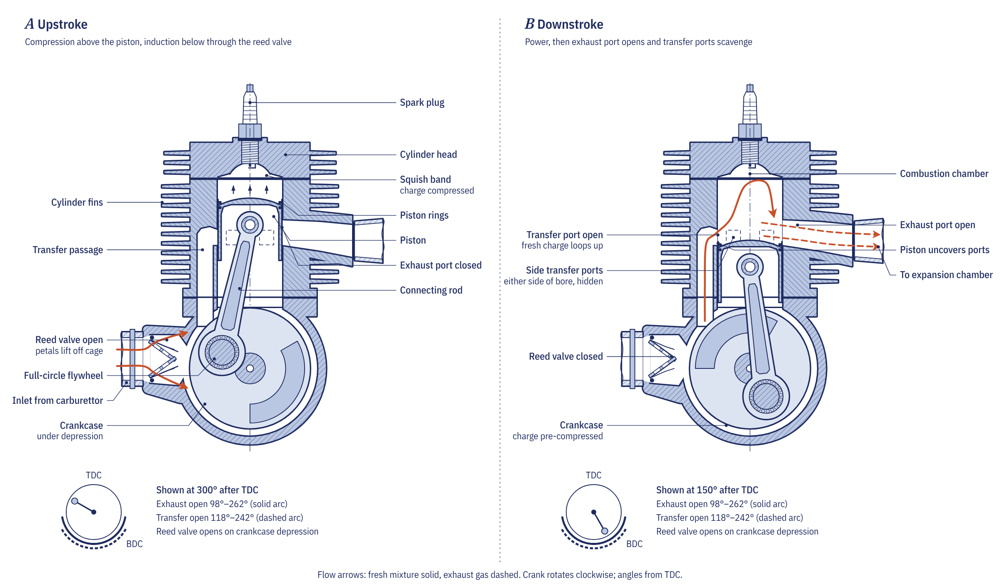
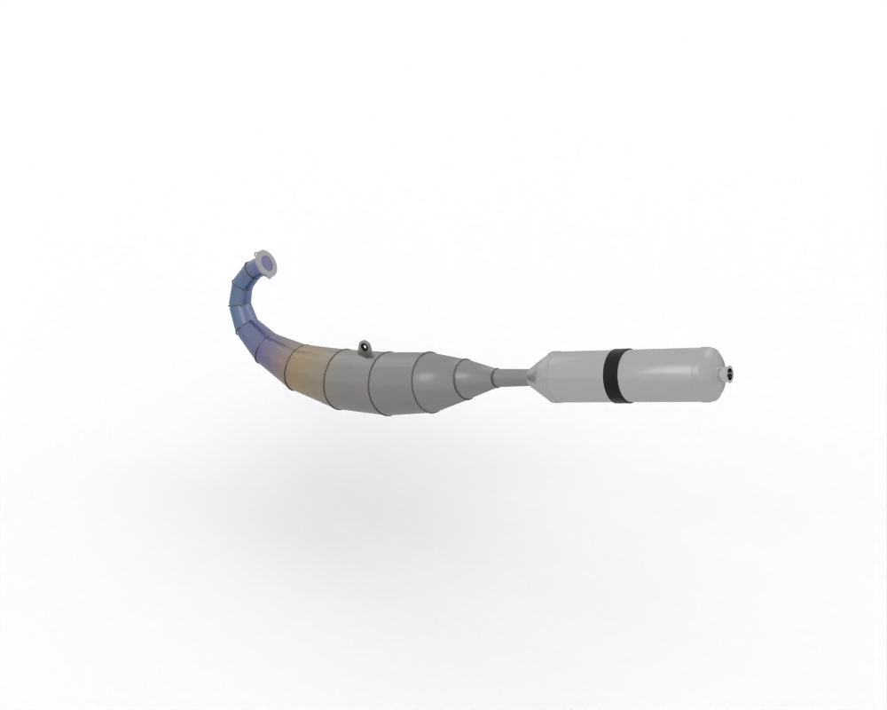

The one difference that explains the rest
Both engines burn air and petrol above a piston and turn a crankshaft through a connecting rod. A four-stroke uses one stroke each for intake, compression, power and exhaust, so each cylinder fires once every two revolutions. A two-stroke combines these jobs into two strokes and fires every revolution. To do that, it uses the underside of the piston and a sealed crankcase as a small pump, and it replaces poppet valves with ports in the cylinder wall that the piston itself uncovers and covers.
How the two-stroke cycle works

Upstroke
As the piston rises, its crown covers the transfer ports and then the exhaust port, and the charge trapped above it is compressed and ignited near top dead centre. At the same time, the volume of the crankcase below the piston grows, its pressure falls to about 0.6 to 0.8 bar absolute, and fresh mixture is drawn into the crankcase through a reed valve.
Downstroke
Combustion drives the piston down. Below it, the reed valve closes and the crankcase charge is compressed to about 1.3 to 1.5 bar absolute. Above it, the crown uncovers the exhaust port at roughly 80 to 100 degrees before bottom dead centre, and the burnt gas rushes out. A few degrees later the transfer ports open, and the pressurised charge from the crankcase flows up into the cylinder, pushing the remaining exhaust gas ahead of it. This exchange is called scavenging.
Modern two-strokes use loop scavenging, in which the transfer ports aim the fresh charge away from the exhaust so that it sweeps up the far wall, turns at the head and pushes the burnt gas out. Even so, some fresh charge always escapes straight out of the exhaust. In a carburetted engine that charge already contains fuel, and losses of 20 to 40 per cent at full throttle are common.
Side-by-side comparison
| Feature | Two-stroke | Four-stroke |
|---|---|---|
| Power strokes | One every revolution | One every two revolutions |
| Gas exchange | Ports in the cylinder wall, reed valve | Poppet valves, camshaft, cam chain |
| Power for the same size | About 1.5 to 2 times higher | Lower, but broader and more tractable |
| Lubrication | Oil mixed with the fuel or injected, burnt in use | Oil kept in the sump and recirculated |
| Emissions | High unburnt hydrocarbons and blue smoke | Much lower; meets current road rules with fuel injection and a catalyst |
| Parts count and weight | Fewer parts, lighter | More parts, heavier |
| Typical use today | Motocross, enduro, trials, older commuters and mopeds | Almost every road motorcycle and scooter |
Why two-strokes make more power for their size
Firing every revolution means twice as many power strokes as a four-stroke at the same engine speed, and the absence of a valve train removes a limit on revs. At equal displacement a two-stroke can therefore produce 1.5 to 2 times the power of a four-stroke, with fewer parts and less weight. That is why a 125 cc two-stroke motocross bike competes against 250 cc four-strokes.
The exhaust plays a large part. A tuned expansion chamber sends pressure waves back to the exhaust port: a suction wave helps pull fresh charge up the transfers, and a later positive wave pushes escaped charge back into the cylinder just before the port closes. Because the waves are timed in milliseconds, the pipe only helps over a band of engine speed, which is why a tuned two-stroke has a narrow, sudden powerband. A power valve, which lowers the exhaust port roof at low revs, widens that band.

Lubrication: premix and oil injection
A four-stroke keeps its oil in the sump and pumps it round the engine. A two-stroke cannot, because its crankcase is part of the intake path. Its bearings and cylinder wall are lubricated by oil carried in with the fuel, which then burns or leaves through the exhaust. Riders either mix oil into the fuel (premix), commonly at 50:1 for modern synthetic oils in road and enduro engines, or rely on a small pump that meters oil from a separate tank. To make 5 litres of 50:1 premix you add 100 mL of oil. An oil-injected two-stroke with an empty oil tank will seize within minutes.
Emissions and why road two-strokes disappeared
The same features that give the two-stroke its power cause its pollution: fresh charge escaping through the exhaust, oil burnt as blue smoke, unstable combustion at part throttle and hot pistons that never get a cooling exhaust stroke. Under the European emission rules, carburetted two-strokes largely left road use from the early 2000s. They survive in competition, enduro and in older commuter fleets in Asia and Africa.
Direct and transfer-port injection have narrowed the gap. KTM's Transfer Port Injection, introduced on its 250 and 300 EXC enduro models for 2018, sprays fuel into the transfer flow late in scavenging, so that mostly air, rather than fuel, escapes through the exhaust.
Maintenance differences
A two-stroke has no valves to adjust and no cam chain to wear, and its top end (piston, rings and small-end bearing) can be rebuilt quickly with basic tools. It needs that rebuild more often, however, especially on a competition machine, and its power valve must be cleaned of carbon regularly: a valve stuck closed stops the engine revving, and one stuck open costs low-speed pulling power. A four-stroke needs oil changes, valve clearance checks and cam chain adjustment, but its intervals are long; the K-Light 125 changes its oil every 3,000 km.
Chapter 2.3 of the course, The two-stroke cycle, covers port timing, expansion chamber length and power valves in detail, with worked calculations.
Frequently asked questions
Is a two-stroke faster than a four-stroke?
At the same displacement a two-stroke typically makes 1.5 to 2 times the power, so it is usually faster for its size. A four-stroke of larger displacement can match it with a broader spread of power.
Why do two-strokes need oil in the fuel?
The crankcase of a two-stroke is part of the intake path, so it cannot hold an oil bath. Oil mixed with the fuel, or injected by a pump, lubricates the bearings and cylinder wall before it burns.
Are two-stroke motorcycles still made?
Yes, mainly for motocross, enduro and trials. Some enduro models now use fuel injection to cut emissions, but carburetted two-strokes have largely left road use under emission rules.
Which lasts longer, a two-stroke or a four-stroke?
A four-stroke usually runs much longer between major repairs. A two-stroke needs top-end rebuilds more often, but each rebuild is simpler and cheaper.
Written by Transitions Lab for the Moto Zero open motorcycle course. Text and illustrations are licensed CC BY-SA 4.0. Figures and values come from the course modules; see sources and credits.